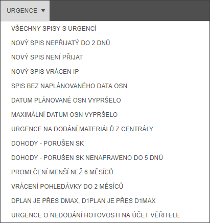
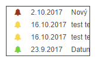

Urgence
Filtr urgence umožní ihned zobrazit spisy s různým kolizním stavem, který je definován příslušnou urgencí u stavu.

Každá urgence bývá vždy součástí spisu a je většinou odstraněna až procesem, který příslušný stav napravuje. U spisu je urgence definovaná datumem vzniku, textem a logem, které ukazuje zda se jedná o Urgenci, Upomínku či Zprávu.
